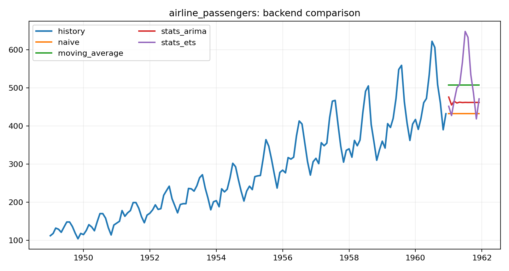
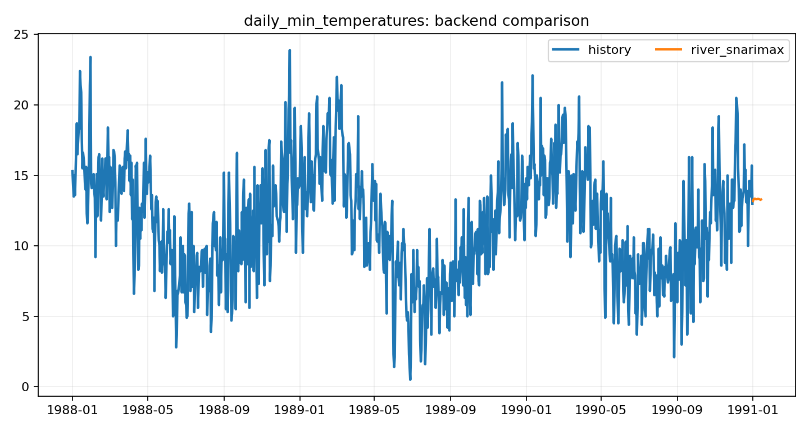
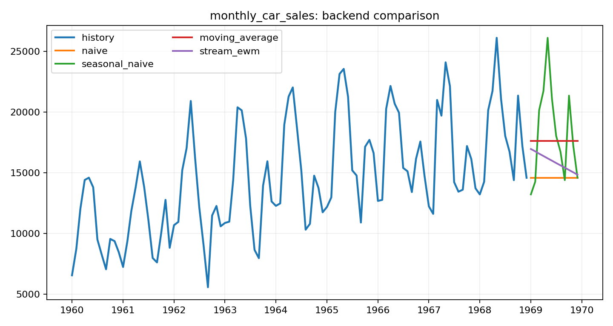

Baseline and seasonal references
Real practical baselines for sanity checks and low-data series.
naive, seasonal_naive, moving_average, drift
A bright, productized surface for scientific forecasting. Compare backends, publish clean artifacts, and expose stable JSON and gallery outputs for humans and agents.
agentforecast is built around practical forecasting families that people actually use: baseline references, ETS and ARIMA, lag-feature regression, and online River-style models. Optional deep or AutoML adapters stay secondary instead of dominating the public surface.
The public homepage should answer model choice first. Auto routing stays grounded in these real, usable model families rather than novelty-only showcase algorithms.
Real practical baselines for sanity checks and low-data series.
Classical models that remain strong in real business forecasting when data is limited and seasonality matters.
Lag-feature regressors for practical tabular forecasting with exogenous variables.
Incremental models for rolling updates, low-latency refreshes, and drift-aware operation.
The gallery builder is opinionated about clarity: clean stats, high-contrast cards, simple code blocks, and obvious links to the underlying artifacts.
Use a dataset id, case id, local CSV, directory, or URL.
Let backend auto-selection compare candidate methods or choose one explicitly.
Get charts, cards, markdown, JSON, and leaderboard artifacts.
Push the static gallery to GitHub Pages or consume the JSON from an agent.
Every card is built from the same product contract: selected backend, transparent metrics, copied artifacts, and a clean path into the case detail page.

airline_passengers: stats_ets won the backend comparison and produced a publishable pack.

daily_min_temperatures: river_snarimax won the backend comparison and produced a publishable pack.

monthly_car_sales: stats_ets won the backend comparison and produced a publishable pack.
Before anyone looks at external benchmarks, they should be able to scan the backend families, concrete model ids, Python entry points, install extras, and core capabilities that agentforecast exposes.
This is the forecasting surface behind the gallery, grouped the way a human evaluator would usually reason about model choice.
Fast reference models for last-value carry, recent averages, drift, and simple seasonal repeats.
naive, seasonal_naive, moving_average, driftARIMA and ETS style models for interpretable seasonality, smoother long-horizon structure, and low-data runs.
stats_arima, stats_ets, statsforecast_autoarima, statsforecast_autoetsLag-feature regression with Ridge, boosting, tree ensembles, and optional MLForecast-style adapters.
ml_ridge, ml_histgb, ml_xgboost, ml_lightgbm, ml_catboost, mlforecast_linear, mlforecast_xgboostIncremental forecasters and online regressors for rolling updates, drift monitoring, and low-latency refreshes.
stream_ewm, stream_sgd, river_linear, river_snarimax, river_holtwintersOptional neural backends for longer-horizon experiments when the lean surface is not enough.
neural_nhitsOptional automation paths for larger search spaces and managed forecasting workflows.
automl_autogluonOptional TabPFN-style regressors for compact tabular forecasting experiments.
tabpfn_regressionThese are the importable functions a human reader can actually call, without having to start from a CLI command.
forecast_dataframeThe main Python entry point for a single DataFrame-backed series.
forecast_dataframe(df, name='series', horizon=12, backend='auto')compare_backends_frameRun a visible backend arena instead of silently picking a winner.
compare_backends_frame(df, name='series', backends=['naive', 'stats_ets', 'ml_ridge'])forecast_stream_dataframeOnline forecasting plus rolling drift diagnostics for streaming-style updates.
forecast_stream_dataframe(df, name='series', backend='river_snarimax', horizon=7)forecast_url / forecast_datasetLow-friction ways to start from a public CSV URL or a packaged demo dataset.
forecast_url(url, name='series') or forecast_dataset('monthly-car-sales')build_hosted_siteTurn many run folders into a static gallery suitable for GitHub Pages.
build_hosted_site(runs_root='public_gallery/demo_runs', site_dir='public_gallery/site')These are the workflow-level features that matter in practice beyond the estimator list itself.
Compare candidate backends automatically and keep the leaderboard visible instead of hiding model choice.
Expose lag points, spaced delays, rolling windows, calendar fields, and optional tsfresh descriptors.
Emit conformal-style lower_* / upper_* bands with coverage and width diagnostics.
Carry external regressors through lag-feature backends and adapters that support exogenous inputs.
Publish rolling diagnostics and drift alert cards alongside streaming forecast packs.
Export plots, cards, CSV, markdown, and JSON for both human readers and agents.
Internal demo evidence stays visible, but broader public benchmark hubs are still the right place to compare against the field.
| Name | Kind | Link |
|---|---|---|
| Monash / ForecastingData repository | dataset hub | https://forecastingdata.org/ |
| Monash baseline evaluation results | baseline results | https://forecastingdata.org/RMSSE.html |
| M4 competition | competition | https://www.unic.ac.cy/iff/research/forecasting/m-competitions/m4/ |
| M5 competition | competition | https://www.unic.ac.cy/iff/research/forecasting/m-competitions/m5/ |
| OpenTS-Bench / OpenTS | leaderboard hub | https://decisionintelligence.github.io/OpenTS/ |
| TFB repository | benchmark codebase | https://github.com/decisionintelligence/TFB |
| GIFT-Eval repository | benchmark | https://github.com/SalesforceAIResearch/gift-eval |
| GIFT-Eval public leaderboard | leaderboard | https://huggingface.co/spaces/Salesforce/GIFT-Eval |
| ForecastBench baseline leaderboard | leaderboard | https://www.forecastbench.org/baseline/ |
| ForecastBench tournament leaderboard | leaderboard | https://www.forecastbench.org/tournament/ |